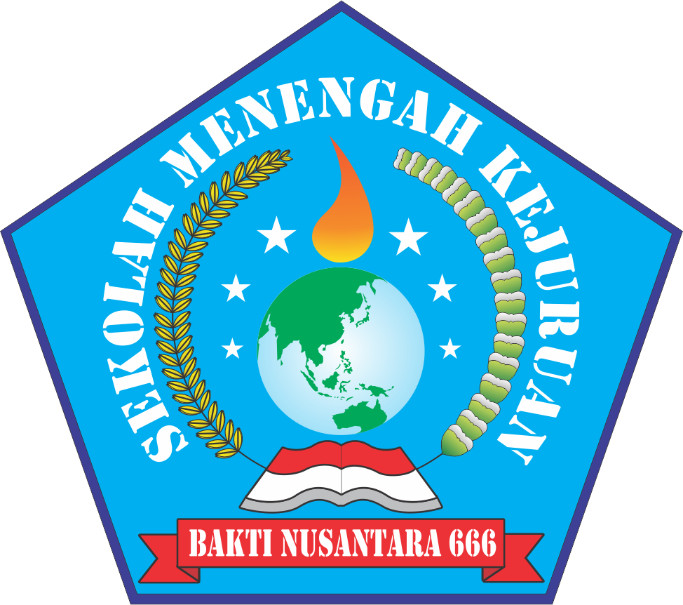
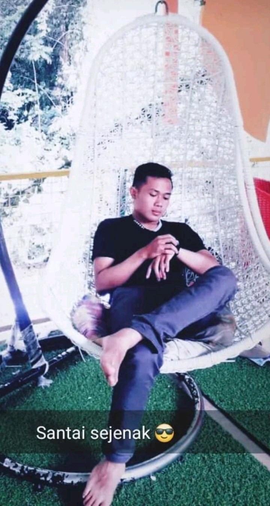

🎮 PPLG Playground
Media Interaktif PPLG SMK
5 Materi
25 Pertemuan
Visual & Contoh Koding
Kuis Interaktif

SMK BAKTI NUSANTARA 666 CILEUNYI
Terakreditasi A · NPSN: 20267919

Pengembangan Perangkat Lunak dan Gim
Program Keahlian PPLG

Asep Ramdani, S.Kom., Gr.
Guru Pemrograman PPLG
📅 Tahun Ajaran 2025/2026
📚 25 Pertemuan PPLG
📊 Progres: 0% (0/5 materi)
🏆 Poin: 0